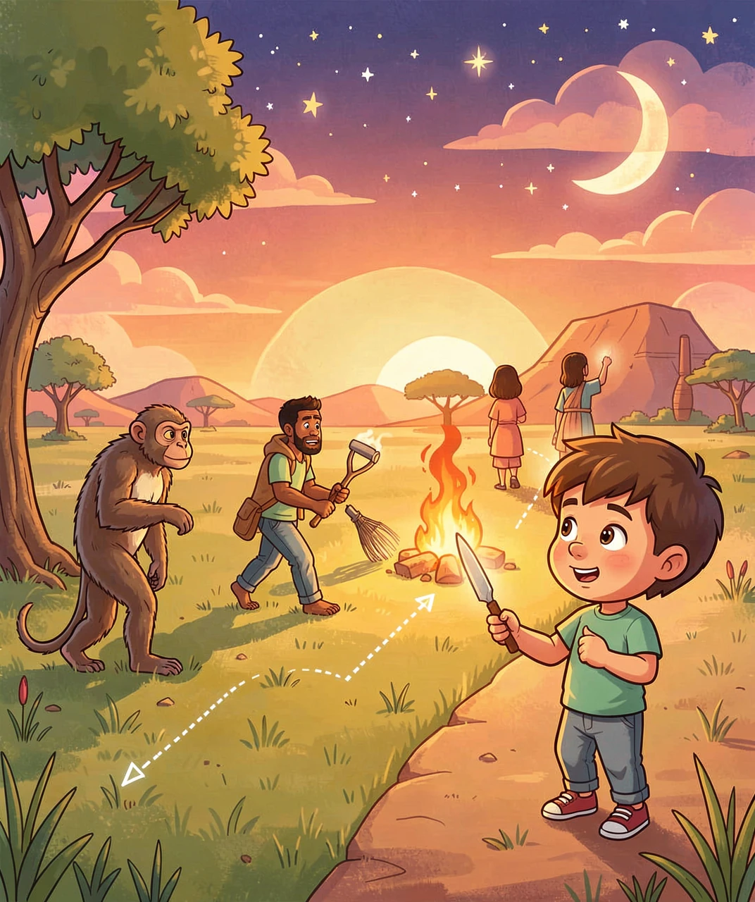
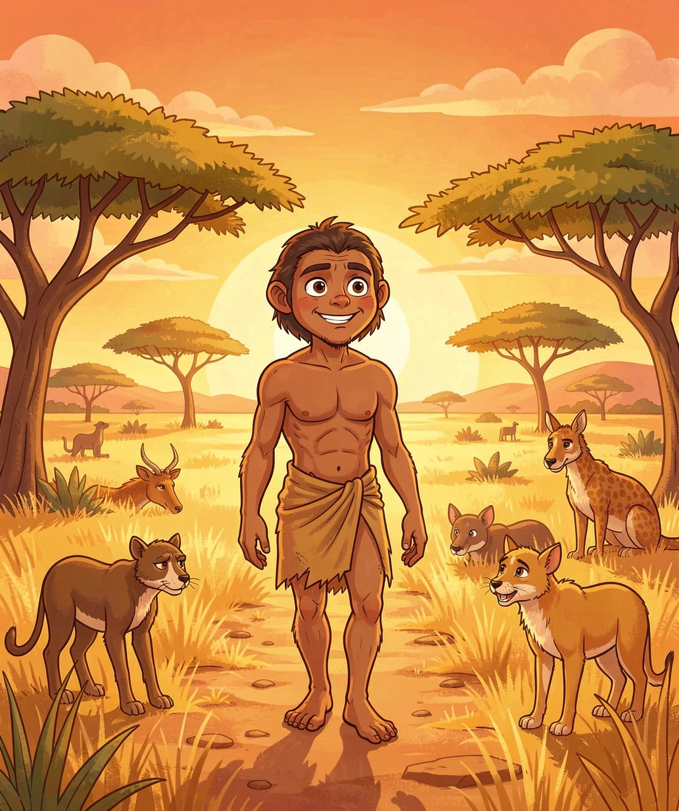
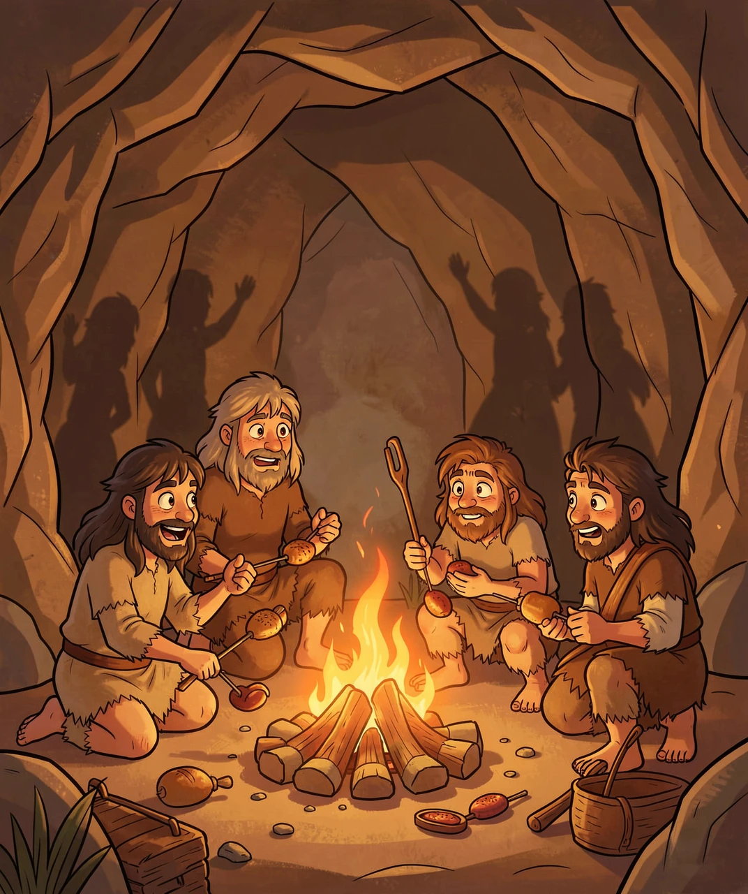
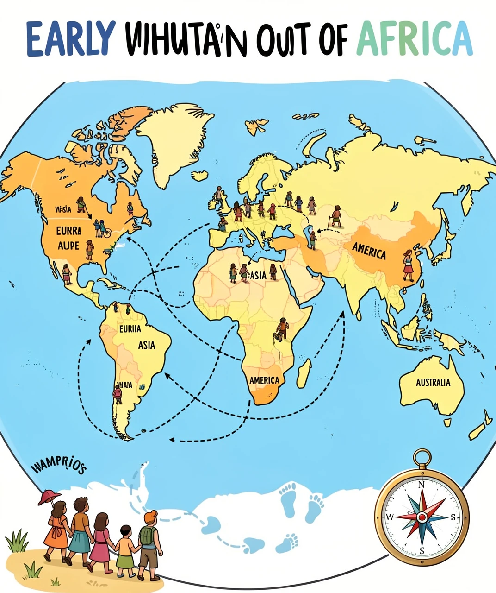
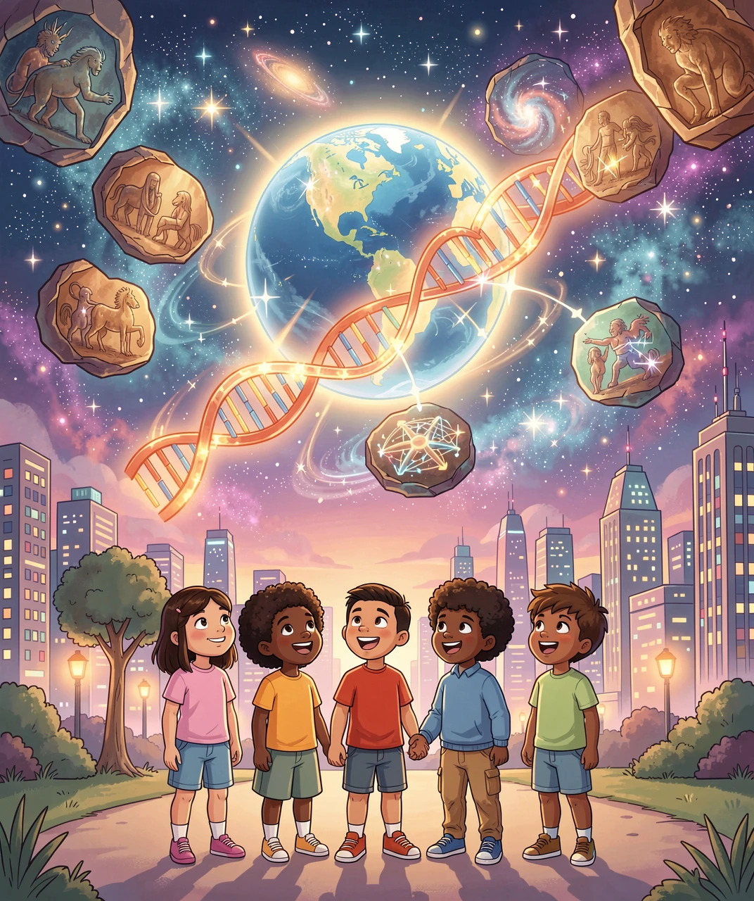

从非洲大草原到全人类——一段几百万年的奇妙旅程
你可能听说过"人是猴子变的"——这句话其实不太对！人类不是从现在的猴子变来的，而是和猴子有一个共同的祖先，就像你和表兄妹有共同的爷爷奶奶一样。
大约600-700万年前，人和黑猩猩的祖先分道扬镳，走上了不同的进化道路。所以黑猩猩不是我们的"前辈"，而是我们的"远房表亲"——我们和黑猩猩的DNA有98.7%是一样的！只差那么一点点，命运就完全不同。

🧬 从树上到星空——人类漫长的进化之旅
来看看我们和亲戚们的DNA有多接近：
没错，你和香蕉有一半的基因是一样的！因为所有生物都共享最基础的生命代码。但就是那1.3%的差异，让人类造出了火箭、写出了诗歌、发明了手机。
大约400万年前，在非洲东部的热带草原上，发生了一件改变世界的事——有一种古猿站起来了！这就是著名的"露西"（Lucy），她属于南方古猿，生活在约320万年前。

🦶 露西——第一个站起来的"人"！非洲大草原上的革命性时刻
为什么"站起来"这么重要？想想看：
🐾 解放双手——两条腿走路后，手不用再撑地了，可以拿东西、做工具、抱孩子！
👀 看得更远——站起来后，视线高出了一大截，能发现远处的猎物和危险！
☀️ 更凉快——直立后身体接收阳光的面积更小，在炎热的非洲草原上不容易中暑！
🏃 走得更远——两条腿走路比四条腿更省力，可以走更长的路寻找食物！
1974年，科学家在埃塞俄比亚发现了露西的化石——她只有约1.1米高，大脑跟黑猩猩差不多大，但她的骨盆和腿骨结构证明她能直立行走！她被命名为"露西"，因为发现她时营地里正在播放披头士乐队的歌曲《Lucy in the Sky with Diamonds》。
从露西到现代人，中间经历了很多"过渡型号"。让我们来认识几个关键角色：

🔥 人类最伟大的发现——火！温暖、光明、熟食，改变了一切
火，可能是人类发现的最重要的一样东西！直立人大约在100万年前开始使用自然火（闪电引起的），大约40万年前学会了自己生火。
火给我们带来了什么？
🍖 熟食——烤熟的肉更容易消化，身体不用花那么多能量消化食物，多出来的能量就用来长大脑！大脑是个"贪吃鬼"，只占体重2%却消耗20%的能量
💡 光明——夜晚不再可怕，可以在火堆旁聊天、讲故事、传承知识
❄️ 温暖——可以住在更冷的地方，不必只待在热带
🐺 保护——野兽怕火，火堆就是最好的"城墙"
大约7万年前，一小群智人做出了一个大胆的决定——离开非洲，去看看外面的世界。这可能是人类历史上最勇敢的旅行！

🗺️ 从非洲出发，人类走遍了全世界！
迁徙的路线大概是这样的：
想一想：从炎热的非洲草原到冰天雪地的北极圈，从干燥的沙漠到潮湿的热带雨林，人类靠着两条腿和聪明的脑袋，花了不到7万年就走遍了整个地球！
基因科学告诉我们一个惊人的事实：全人类99.9%的基因是一样的。不管你是黄皮肤、黑皮肤还是白皮肤，不管你说中文、英语还是斯瓦希里语，我们的基因差异微乎其微。

🌍🧬 从远古到星空，我们是一家人
科学家通过研究线粒体DNA（只从母亲传给孩子的DNA）发现：今天全世界所有人，都可以追溯到非洲的一位共同女性祖先，科学家叫她"线粒体夏娃"——她大约生活在15-20万年前。同样，通过Y染色体（只从父亲传给儿子），我们也追溯到一位"Y染色体亚当"——他大约生活在20-30万年前。
注意：他们不是当时唯一的两个人，而是他们的后代一直传到了今天，其他人的后代在漫长的历史中中断了。就像一棵大树，很多枝杈枯萎了，但有几根枝杈长成了今天的大树冠。
人类外表的差异——肤色、发型、面部特征——其实都是对当地环境的适应：
☀️ 肤色——赤道附近阳光强烈，深色皮肤能保护身体免受紫外线伤害；高纬度阳光弱，浅色皮肤更容易合成维生素D
👃 鼻子——寒冷干燥的地方，高鼻梁能给空气加温加湿；炎热潮湿的地方，宽鼻子更利于散热
💇 头发——卷曲的头发在头皮和皮肤之间留出空气层，是天然的"隔热帽"！
这些差异只占我们基因的0.1%，而且都是几万年来为了适应不同环境而产生的变化。剥开这层薄薄的外衣，里面是同样的基因密码——我们都来自非洲，我们都是亲戚。
DNA就像一本用4个字母（A、T、G、C）写成的"说明书"，写满了建造和运行你身体的全部指令。如果把一个细胞里的DNA全部展开连起来，大约有2米长！而你有约37万亿个细胞——所有DNA连起来可以从地球到太阳来回600多次！🤯
基因检测现在可以告诉你祖先来自哪里。很多公司提供这种服务，你吐口唾沫，他们就能分析出你的祖源比例——也许你会发现自己的祖先来自意想不到的地方！
从400万年前露西在非洲大草原上迈出第一步，到7万年前勇敢地走出非洲，再到今天你拿着手机看这篇文章——这是一段多么了不起的旅程！记住：每个人的血管里，都流淌着几百万年进化的智慧。你的存在本身，就是一个奇迹。🌍✨
💡 答案：1-C 2-C 3-A 4-C 5-B